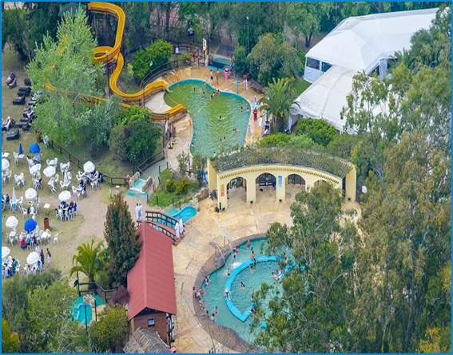
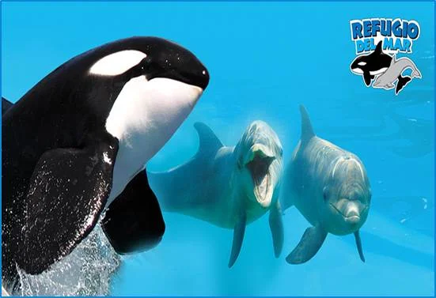
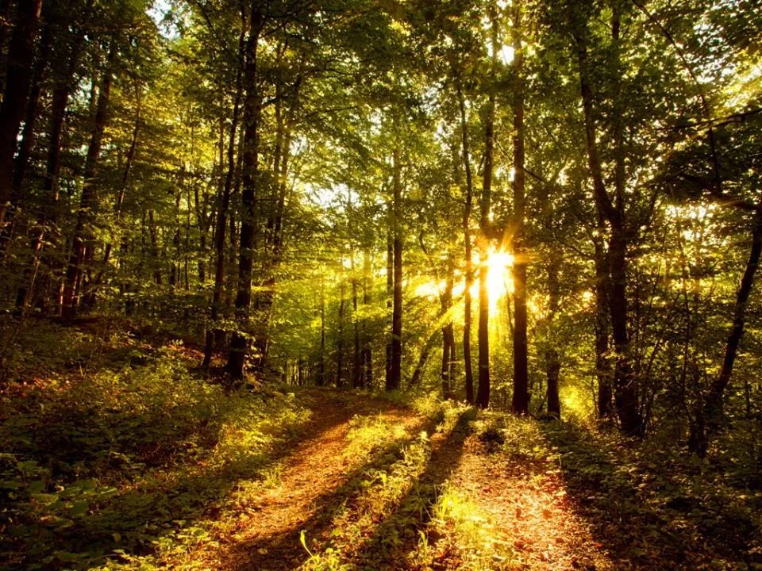
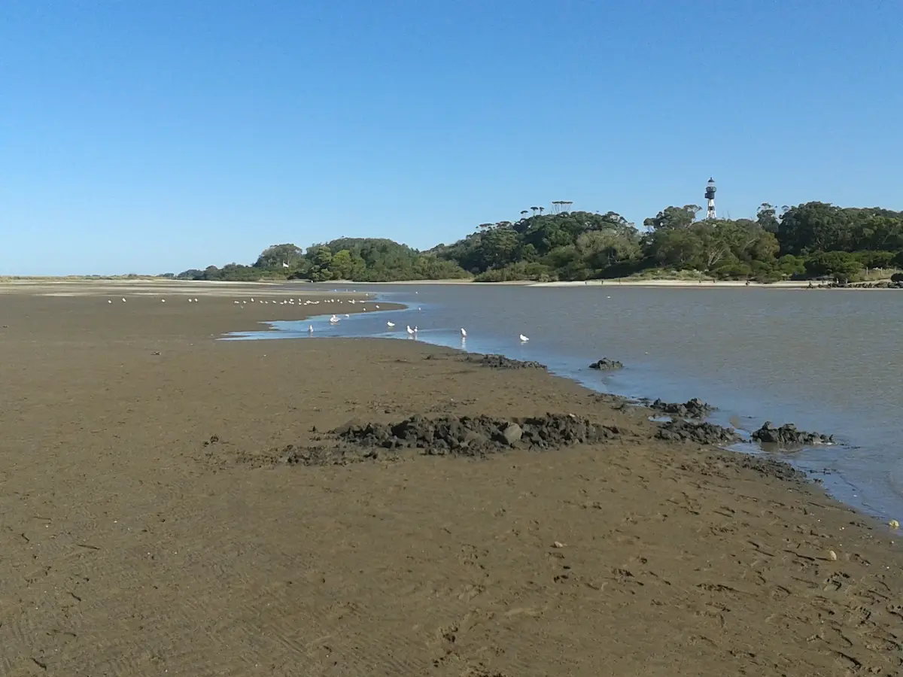
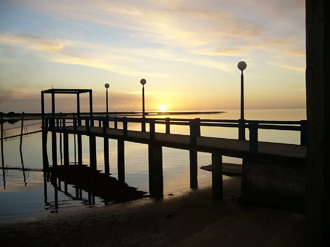
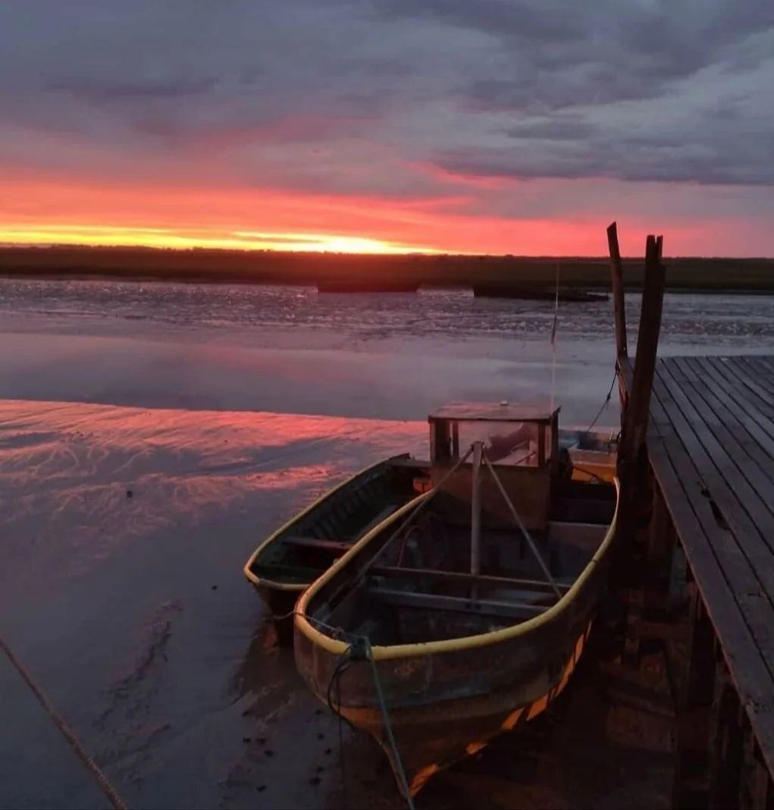
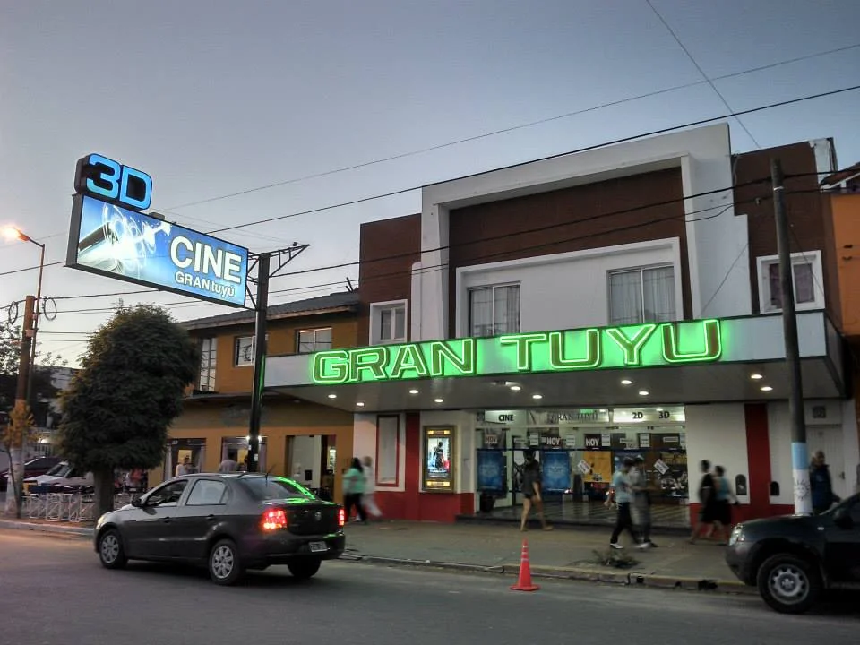
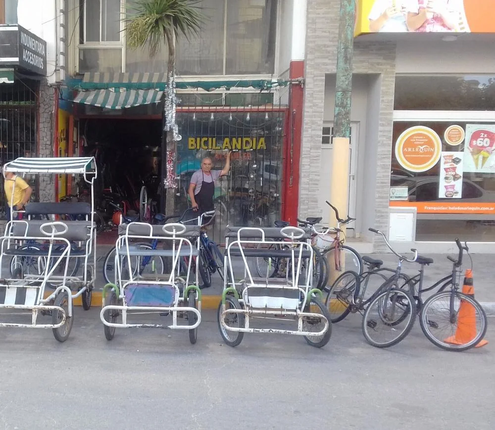

Qué hacer en San Clemente del Tuyú

Termas Marinas
Ubicado a 15 minutos del centro.
En la página web podrá ver que días está abierto, los horarios y
los precios.
🚖 Si no tiene vehículo, puede trasladarse hasta allí en remis o
comprando las entradas en los lugares de venta que se encuentran
en el centro, hay algunos que por un precio extra incluyen el
traslado ida y vuelta.
Uno de estos lugares es CAYMA Viajes, ubicado en Calle 2 y calle
27 (local 20)
Tel. (2252) 522 225

Mundo Marino
Ubicado en la zona del Puerto. A 10 minutos del centro.
En la página web podrá ver los horarios, los shows, los precios y
muchos datos más. Si no tiene vehículo, puede trasladarse hasta
allí en remis o si compra las entradas en los lugares de venta que
se encuentran en el centro, hay algunos que por un precio extra
incluyen el traslado. Uno de estos lugares es "CAYMA Viajes",
ubicado en Calle 2 esq. calle 27 (local 20) Tel. (2252) 522 225

Vivero Cosme Argerich
Horario 9 a 19hs (Ingreso gratuito)
Ubicado en AV. XV Y 18 El vivero tiene una superficie de 36
hectáreas, pero sólo 27 de ellas se encuentran forestadas.
Cuenta con un paseo forestal, una oficina de informes, una
zona con parrillas, mesa con bancos y baños públicos.
Recomendación:
No es conveniente ir los días de fuertes vientos, por caída de ramas.

Punta Rasa
Es una reserva ecológica. En este lugar podrás apreciar la salida
del sol sobre el mar y al atardecer lo verás desaparecer sobre el
río.
Encontrarás la zona de los cangrejales, las aves
migratorias, junto con la flora son ideales para los que aman la
naturaleza.
Hay transportes que salen desde el centro, son paseos guiados que
recorren la bahía de Samborombón y llegan hasta la playa donde se
ve fauna y flora autóctona, los cangrejales, el cabo San Antonio y
de ser posible la puesta del sol, una experiencia para toda la
familia.
Recomendación:
Si va en su vehículo, tenga en cuenta los horarios de crecida del
mar –pleamar-, ya que cuando esto sucede los caminos de
ingreso/egreso se inundan. Puede encontrar esta información en
internet (tabla de mareas de san clemente) o consultar en las
casas de pesca de la zona.

Tapera de López
Espacio natural emplazado en los márgenes del Arroyo San Clemente, en dirección norte hacia la Bahía de Samborombón, sitio ideal para la práctica de las más variadas actividades deportivas y recreativas. Deportes náuticos como windsurf, remo, canotaje, motonáutica, sky acuático, surf; juegos infantiles para diversión de los más chicos; sector arbolado y acondicionado con mesas y parrillas donde disfrutar de agradables picnics; Tapera de López es el lugar perfecto para entretenerse en pleno contacto con la naturaleza. Con un muelle de más de 40mts. de largo, una extensa rampa para bajada de lanchas, amarradero y grúa, este espacio recibe constantemente embarcaciones que embellecen su cuadro costero. Aguas tranquilas y extraordinarias puestas de sol, Tapera de López es mucho más apasionante de lo que puede imaginar. Cobran el ingreso.

Puerto de San Clemente
El puerto de San Clemente del Tuyú, es un lugar lleno de belleza natural y tranquilidad. Este puerto, bañado por las aguas serenas del Río de la Plata y el Atlántico, ofrece un espectáculo inigualable cuando el sol se oculta en el horizonte, tiñendo el cielo con tonos cálidos de naranja y rosa que se reflejan en el agua.
Este escenario se llena de vida con la presencia de flamencos, garzas y otras aves características de la región. Estos visitantes alados añaden un toque de magia a la escena, ofreciendo una experiencia única para los amantes de la naturaleza y la observación de aves. El puerto es un punto de encuentro para pescadores y navegantes locales, quienes mantienen viva la tradición marítima del lugar.
Es un sitio donde la naturaleza y la actividad humana coexisten en perfecta armonía

Cine "Gran Tuyú"
En Av. San Martín 181.
Teléfono: 2252 52-1025.
A través de Facebook, puede ver qué películas proyectarán y los horarios.
Alquiler de caballos
1- En la entrada al 'Vivero Municipal Cosme Argerich' en Av. XV y calle 18
2- En Av. Costanera y Av. VII

Alquiler de bicicletas
En "BICILANDIA", ubicado en Avenida San Martin al 100
Alquiler de carritos y bicicletas, también hace reparaciones
de bicis.
Qué podés necesitar para disfrutar mejor
Muchos huéspedes suelen traer algunos elementos que hacen más cómoda la experiencia en la playa o en actividades al aire libre.
Si estás planificando tu estadía, podés ver nuestra opciones de alojamiento aquí:
Ver propiedades para alquilar →